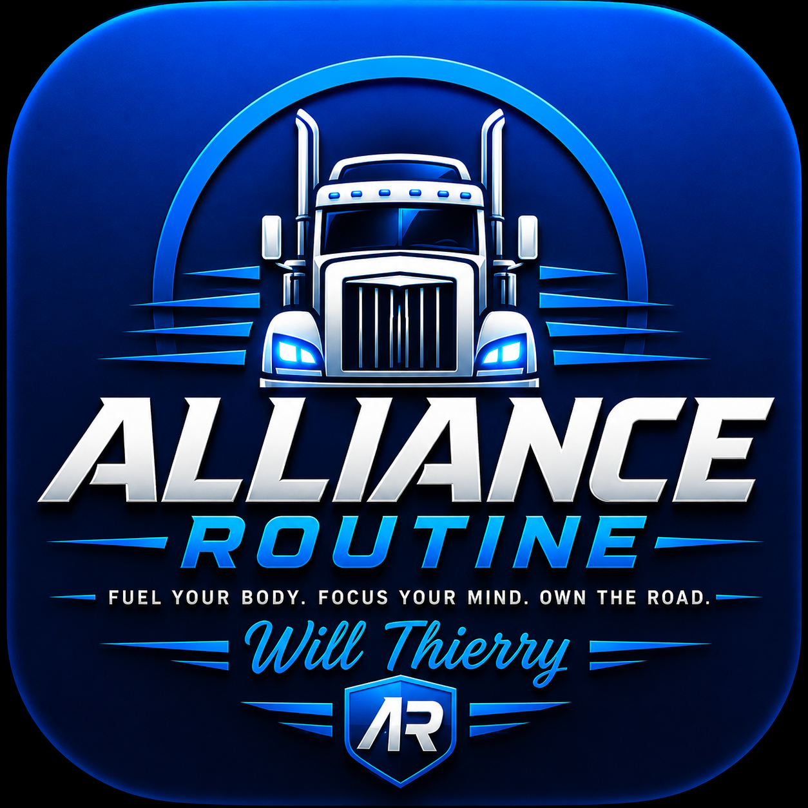

🥚
Eggs + Whole-Grain Toast
Eggs with whole-grain toast and fruit.
💪 Benefis pou kò a: Ze bay bon pwoteyin pou ede kenbe misk yo; pen ak grenn antye bay fib ak enèji; fwi bay vitamin ak mineral.
This routine is dedicated to Will Thierry — a man who deserves to take care of his body, his energy and his future. It is a personal guide created to help him make better choices with food, movement, hydration, rest and everyday discipline. Every meal, every workout and every healthy decision is one more step toward feeling stronger and living better.
Darfie loves you. Do everything right here. ❤️

A practical mix of Haitian favorites and healthy American choices for every part of the day.
Start the day with protein, fiber and a drink that keeps you hydrated.
Eggs with whole-grain toast and fruit.
💪 Benefis pou kò a: Ze bay bon pwoteyin pou ede kenbe misk yo; pen ak grenn antye bay fib ak enèji; fwi bay vitamin ak mineral.
Oatmeal topped with berries, banana or a small amount of nuts.
💪 Benefis pou kò a: Avwàn bay fib ak idrat kabòn pou enèji; ti fwi wouj bay fib ak vitamin C; ansanm yo ka fè w santi w plen pi lontan.
Greek yogurt with fruit and a small handful of nuts.
💪 Benefis pou kò a: Yogout grèk bay pwoteyin ak kalsyòm; fwi bay fib, vitamin ak idrat kabòn natirèl.
Haitian cornmeal with eggs and vegetables.
💪 Benefis pou kò a: Mayi moulen bay idrat kabòn pou enèji; ze bay pwoteyin; legim yo bay fib, vitamin ak mineral.
Boiled plantain with eggs and vegetables.
💪 Benefis pou kò a: Bannann bay idrat kabòn ak potasyòm; ze bay pwoteyin; legim yo bay fib ak vitamin.
Eggs, avocado and whole-grain toast for a satisfying breakfast.
💪 Benefis pou kò a: Zaboka bay bon grès ak fib; ze bay pwoteyin; grenn antye bay fib ak idrat kabòn.
Water is the everyday winner. Smoothies can add fruit and protein without loading up on added sugar.
Make water the main drink throughout the day.
💪 Benefis pou kò a: Dlo ede kò a rete idrate, kontwole tanperati epi fè fonksyon nòmal li yo. Se pi bon bwason pou bwè chak jou.
Blend fruit with Greek yogurt or milk and avoid adding lots of sugar.
💪 Benefis pou kò a: Fwi bay idrat kabòn, fib ak vitamin; yogout grèk oswa lèt ka ajoute pwoteyin ak kalsyòm.
Try spinach, banana, berries, Greek yogurt and water or milk.
💪 Benefis pou kò a: Epina bay vitamin ak mineral; fwi bay idrat kabòn ak fib; yogout ka ajoute pwoteyin ak kalsyòm.
If choosing juice, keep the serving modest and choose 100% juice when possible.
💪 Benefis pou kò a: Ji zoranj 100% bay vitamin C ak idrat kabòn natirèl. Li pi bon pou pran yon ti pòsyon pase bwason ki gen anpil sik ajoute.
Build lunch around lean protein, vegetables and a satisfying whole-grain or starchy side.
Chicken, leafy greens, vegetables and a moderate amount of dressing.
💪 Benefis pou kò a: Poul bay pwoteyin; legim yo bay fib, vitamin ak mineral; yon sòs ki lejè ede kenbe manje a ekilibre.
Whole-grain wrap with chicken, vegetables and a lighter sauce.
💪 Benefis pou kò a: Poul bay pwoteyin; yon tortilla ak grenn antye ka bay fib ak idrat kabòn; legim yo bay vitamin ak mineral.
A simple American-style bowl with brown rice, grilled chicken and vegetables.
💪 Benefis pou kò a: Diri bay idrat kabòn pou enèji; poul bay pwoteyin; legim yo bay fib ak vitamin.
Haitian rice and beans with chicken and plenty of vegetables.
💪 Benefis pou kò a: Diri ak pwa bay idrat kabòn, pwoteyin plant ak fib; poul ajoute pwoteyin; legim yo bay vitamin ak mineral.
Somon ak pasta se yon repa ki ka bay bon jan enèji epi li fasil pou prepare davans.
💪 Benefis pou kò a: Somon bay pwoteyin ak omega-3; pasta bay idrat kabòn pou enèji. Chwazi pasta ak grenn antye epi ajoute legim lè sa posib.
Lean turkey on whole-grain bread with lettuce, tomato and fruit on the side.
💪 Benefis pou kò a: Kodenn ki pa twò gra bay pwoteyin; pen ak grenn antye ka bay fib ak idrat kabòn; legim yo bay vitamin ak mineral.
Keep dinner balanced and satisfying, especially after a long day.
Grilled salmon with vegetables and a moderate serving of rice or potatoes.
💪 Benefis pou kò a: Somon bay pwoteyin ak grès omega-3; legim yo bay fib ak vitamin; diri oswa pòmdetè bay idrat kabòn pou enèji.
Grilled chicken, sweet potato and broccoli or another favorite vegetable.
💪 Benefis pou kò a: Poul bay pwoteyin; patat dous bay idrat kabòn, fib ak potasyòm; bwokoli bay fib ak vitamin.
Turkey, beans and vegetables in a hearty chili.
💪 Benefis pou kò a: Kodenn bay pwoteyin; pwa bay pwoteyin plant ak fib; legim yo bay vitamin ak mineral.
Haitian pumpkin soup with vegetables and protein.
💪 Benefis pou kò a: Joumou ak legim yo bay fib ak vitamin; vyann bay pwoteyin; soup la ka bay yon repa nourisan ki plen vant.
Haitian bouyon with vegetables, plantain and a moderate portion of meat.
💪 Benefis pou kò a: Legim yo bay fib ak eleman nitritif; bannann bay idrat kabòn; vyann bay pwoteyin. Li bon pou limite sèl ak vyann ki twò gra.
Fish with boiled plantain and vegetables for a Haitian-style dinner.
💪 Benefis pou kò a: Pwason bay pwoteyin epi kèk kalite pwason bay omega-3; bannann bay idrat kabòn ak potasyòm; legim yo bay fib.
Haitian legim with rice and chicken, with vegetables taking center stage.
💪 Benefis pou kò a: Legim yo bay fib ak vitamin; diri bay idrat kabòn; poul bay pwoteyin.
White rice with Haitian legim and a lean protein.
💪 Benefis pou kò a: Diri bay idrat kabòn pou enèji; legim yo ajoute fib ak vitamin; yon pwoteyin ki pa twò gra fè repa a pi ekilibre.
Dessert can still be enjoyable. Keep portions reasonable and make fruit a frequent choice.
Strawberries, berries, melon, oranges, apples or pineapple.
💪 Benefis pou kò a: Fwi bay fib, vitamin, mineral ak idrat kabòn natirèl pou kò a.
Banana with a small serving of peanut butter.
💪 Benefis pou kò a: Bannann bay idrat kabòn ak potasyòm; manba bay pwoteyin ak bon grès.
Plain or lightly sweetened Greek yogurt with fresh berries.
💪 Benefis pou kò a: Yogout grèk bay pwoteyin ak kalsyòm; ti fwi wouj bay fib ak vitamin C.
A small portion can satisfy a sweet craving.
💪 Benefis pou kò a: Yon ti kantite ka satisfè anvi manje dous epi bay kèk konpoze ki soti nan kakawo; kenbe pòsyon an piti.
Enjoy an occasional homemade cookie, especially when made with oats and less added sugar.
💪 Benefis pou kò a: Avwàn bay fib; kenbe pòsyon an piti pou li rete yon desè okazyonèl ki pa pote twòp sik ajoute.
Fruit blended with yogurt and topped with a small amount of nuts or seeds.
💪 Benefis pou kò a: Fwi bay fib ak vitamin; yogout ka bay pwoteyin ak kalsyòm; nwa oswa grenn bay bon grès ak mineral.
Choose water most often. Limit drinks with lots of added sugar and be mindful of oversized juice portions.
Easy recipe collections and cooking ideas for breakfast, lunch, dinner, smoothies and Haitian favorites.
A large recipe collection with breakfast, main dishes, soups, salads, smoothies and desserts, including quick and easy options.
Open RecipesFast recipes designed for busy days, with practical meals that don't require complicated preparation.
See IdeasTry fruit-based smoothie ideas, including protein and fiber-friendly options.
Make a SmoothieA simple three-ingredient avocado and coconut smoothie option for breakfast or a snack.
Open RecipeA recipe for the classic Haitian pumpkin soup, with vegetables and protein.
Cook Soup JoumouA recipe collection from the American Heart Association with breakfast, lunch, snack and dinner ideas.
Open CookbookShort workouts can fit into a driver's day. Start small and build consistency.
Walk briskly around a safe truck-stop area after parking.
Try squats, wall push-ups, lunges and gentle core work at a comfortable level.
Gentle stretches for your legs, hips, shoulders and back after long periods of sitting.
A simple daily framework for life on the road.
Water, a balanced meal and a few minutes of movement.
Keep water and healthy snacks within reach.
Walk, stretch or do a short workout when safely parked.
Choose a balanced dinner and protect your sleep time.
These foods don't have to disappear completely. The goal is to enjoy them less often and choose lighter options most of the time.
Why limit them? They can be high in sodium and fat, especially in large portions. A heavy meal can leave you feeling full, sluggish or tired.
💡 Better choice: Try baked potatoes, sweet potatoes or a smaller portion of fries with a balanced meal.
Why limit them? Large burgers can be high in sodium, saturated fat and calories, especially when combined with fries and a sugary drink. Heavy meals may make you feel sluggish afterward.
💡 Better choice: Choose a grilled chicken sandwich, a smaller burger, vegetables or fruit when available.
Why limit it? Soda can contain a lot of added sugar without providing much nutritional value. It can give quick energy but doesn't replace proper hydration.
💡 Better choice: Make water your main drink and keep sugary drinks occasional.
Why limit them? They are often high in added sugar and saturated fat and relatively low in fiber and protein. They may not keep you full for long.
💡 Better choice: Try fruit, oatmeal, Greek yogurt or a small dessert portion.
Why limit them? Very greasy or oversized meals can feel heavy in your stomach and may leave you feeling sluggish or tired afterward.
💡 Better choice: Choose grilled, baked or air-fried foods more often.
Why limit them? Bacon, sausage, hot dogs and similar foods can be high in sodium and saturated fat. Eating them frequently is not the best choice for a heart-healthy routine.
💡 Better choice: Try fish, chicken, beans, lentils or lean turkey more often.
A very large or heavy meal can make you feel sleepy or sluggish. Keep portions reasonable, and if you feel drowsy while driving, stop somewhere safe and rest. Never try to push through sleepiness.
Ti abitid ki ka ede Will pran swen tèt li pandan li ap pase anpil tan nan truck la.
Bwè dlo regilyèman pandan jounen an pou ede kò ou rete idrate.
Prepare kèk manje lakay pou ou ka gen bon opsyon lè ou sou wout la.
Lè ou fin pake truck la an sekirite, pran kèk minit pou mache.
Apre ou fin pase anpil tan chita, pran kèk minit pou detire janm ou, do ou ak zepòl ou.
Pa neglije dòmi ak repo. Lè ou santi ou fatige oswa dòmi pandan w ap kondwi, kanpe nan yon kote ki an sekirite epi repoze.
Kenbe dlo, fwi, yogout, legim ak lòt bon manje nan cooler ou pou ou toujou gen bon chwa.
Lave men ou anvan ou manje epi kenbe kote ou prepare manje ou pwòp.
Chwazi bon manje, bwè ase dlo, bouje kò ou epi bay tèt ou ase repo. Ti bon abitid chak jou ka ede ou pran pi bon swen sante ou.
Chak jou, m ap ret tann ou ak sante.
Ke Bondye beni ou.
Mwen renmen ou. ❤️
Darfie & Alliance Forever ♾️